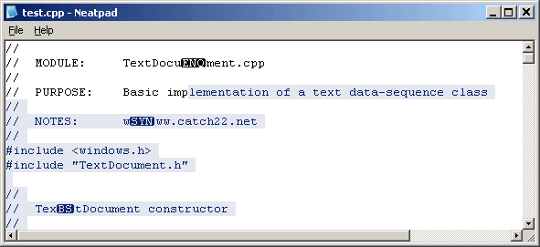
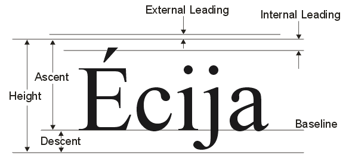
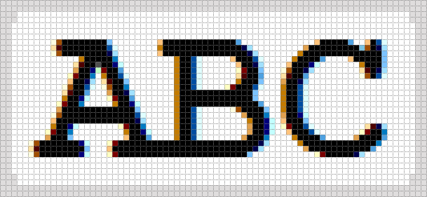
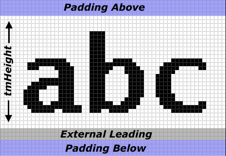
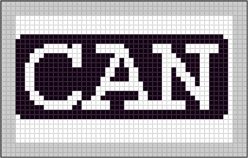
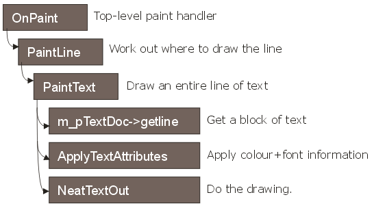

Enhanced Drawing & Painting
Win32テキストエディタの設計と実装」シリーズの第4回目にようこそ。今回は、今までとは違ったチュートリアルを期待されていたのではないかと思います。しかし、マウスによる選択やハイライトを実装し始めてから、描画の「エンジン」に適切なサポートがないことに気がつきました。そこで、このチュートリアルでは、テキスト出力に関するすべての要求を満たすことにしました。そのため、タブ出力、マルチカラーのテキスト（シンタックスハイライトや選択ハイライトなど）、ASCII制御文字の問題などを取り上げます。
">
Example of coloured text with ASCII control characters.
Multi-coloured text
描画コードを修正する必要がある最初の理由は、複数色のテキストをサポートすることです。これは単にシンタックスの色付けのことではありません。選択範囲の強調表示は、選択されたテキストと選択されていないテキストを区別するために、テキストを異なる色で描画しなければならない主な理由です。下の画像は、デフォルトのシステムカラーを使用して、中央部分が選択されたテキストの行を示しています。
">
テキストは実際には選択されておらず、単に2つの異なる配色で描かれていることに注意してください。使用しているブラウザで、このテキストの段落を選択してみてください。そして、あなたが行っている「選択」は、実際には異なる色で描かれたテキストのセグメントに過ぎないことを理解してください。したがって、TextViewに必要なことは、テキストを適切なセグメントに分割し、ExtTextOutを呼び出す前にSetTextColorとSetBkColorを呼び出して色を設定することだけです - ここには本当に何の魔法もありません。
このようなコントロールを最初に起動したときのよくある間違いは、複雑な塗りつぶしモード、反転した長方形、透明なテキストを使って、選択されたテキストをWM_MOUSEMOVEハンドラで描画しようとすることです。これは本当に最悪の方法です。次のチュートリアルでは、マウスを使って選択範囲を更新する方法を示しますが、すべての描画はWM_PAINTハンドラで行われます。
そのため、描画ロジックでは、あらゆる色の組み合わせに対応できなければなりません。構文やブロックの強調表示については、事前に考えておく必要があるからです。また、テキストファイルには色やスタイルの情報が保存されていないため、文字の色は別途計算し、実行時に表示されるテキストに適用する必要があります。
1つの文字の属性は、以下のようなATTR構造で表されます。
typedef struct{
COLORREF fg; // foreground colour
COLORREF bg; // background colour
ULONG style; // font and style information
} ATTR;
TextDocumentからテキストの行が取得されると、このテキストは表示する前に「カラー化」されなければなりません。フォント、スタイル、カラーの属性は、ApplyTextAttributesという別のルーチンで計算されます。
void TextView::ApplyTextAttributes( ULONG nLineNo,
ULONG nOffset,
TCHAR *szText,
int nTextLen,
ATTR *attr)
{
// loop over each character in the text-buffer
for(int i = 0; i < nTextLen; i++)
{
// apply highlight colours
if(nOffset + i >= m_nSelectionStart && nOffset + i < m_nSelectionEnd)
{
attr[i].fg = GetColour(TXC_HIGHLIGHTTEXT);
attr[i].bg = GetColour(TXC_HIGHLIGHT);
}
// normal text colours
else
{
attr[i].fg = GetColour(TXC_FOREGROUND);
attr[i].bg = GetColour(TXC_BACKGROUND);
}
attr[i].style = 0;
}
}
この関数は、テキストが描画されようとするときに呼び出されます。nLineNoとnOffsetという2つのパラメータが渡され、ファイル内でのテキストの位置を示します。ApplyTextAttribrutesは、この2つのパラメータを使って、テキストの「フォーマット」を決定します。
TCHAR buff[100];
ATTR attr[100];
ULONG fileoff;
// get some text from the TextDocument
int len = m_pTextDoc->getline(nLineNo, 0, buff, 100, &fileoff);
// calculate colour and font information
ApplyTextAttributes(nLineNo, fileoff, buff, len, &attr);
書式情報は、テキストを格納する szText バッファと同じサイズの ATTR 配列を通じて返されます。今のところ、この関数は「通常」と「ハイライト」のテキストを記述するのに十分ですが、いかなる形式のシンタックスハイライトも行いません。シンタックスハイライトには追加の要件があるので、関数のプロトタイプを少し変更する必要があると思います。
Multi-font display
このシリーズのパート1では、TextViewを単一の固定幅のフォントに制限したいと書きました。固定幅のフォントを使う理由は、TextViewのコードをできるだけシンプルにするためで、特にマウスカーソルの配置ロジックにあります。しかし、固定幅のテキスト表示であっても、本当の意味での固定幅ではありません。というのも、TAB文字があると、テキストの行間にさまざまなサイズのギャップが生じるからです。TAB文字を処理しなければならないということは、マウスが行のどこに置かれたかを判断するために、テキストの各行を解析する追加のコードを書くことになります。私が可変幅フォントをサポートする理由は、「やるべきことが増えるなら、きちんとやって、すべての種類のフォントを扱えるようにしたほうがいい」ということです。
複数のフォントを管理するためには、これらのフォントをどうにかして管理するための工夫が必要です。FONT構造体（以下に定義）は、フォント（通常のHFONT）へのハンドルを保持し、さらにフォントの寸法に関する重要な情報をTEXTMETRIC構造体に格納しています。
struct FONT
{
HFONT hFont;
TEXTMETRIC tm;
int nInternalLeading;
int nDescent;
};
これらのフォントの配列は、TextViewクラスのメンバとして格納されています。
FONT m_FontAttr[MAX_FONTS];
int m_nNumFonts;
この配列の最初の要素（要素ゼロ）は、常にデフォルトの表示フォントです。この配列にフォントを追加することができますが、何らかのシンタックスハイライト機能が開発されない限り使用されません。コントロールの中では、完全に異なるスタイルではなく、フォントのバリエーション（例えば、ノーマルフォントとボールドフォント）が使われると想像していますが、TextViewはあなたが決めたどんなフォントにも対応します。
">
複数のフォントを使用すると、上の図のように複雑な問題が発生します。この問題は3つのケースに分けられます。
- フォントには幅と高さがあります。幅はそれほど問題ではありませんが、高さの異なるフォントは、ベースが同じ水平線上に来るように配置する必要があります。
- テキストの行の高さは、もはや単一のフォントに基づくものではなく、現在使用されている最も背の高いフォントを保持するのに十分な大きさでなければなりません。
- 小さいフォントは、塗装しても線の垂直方向の延長線上を埋められません（上の写真でわかるように）。そのため、この余分な「デッドスペース」を自分たちで埋める必要があります。
これらの問題を解決するためには、まず、フォントの構造がGDIによってどのように記述されるかを理解する必要があります。下の図は、TEXTMETRIC構造で記述されたフォントの寸法を示しています。
">
フォントのベースラインは、Ascent 寸法で測定されます。したがって、使用しているすべてのフォントのうち最大の上昇値を記録しておけば、個々の上昇値に基づいて、短いフォントを垂直方向にオフセットする量を計算することができます。例えば、上昇値が21の「Courier New」と上昇値が18の「Lucida」の2つのフォントを使用しているとします。Lucidaフォントを使用してテキストを描く場合、ベースラインを正しく揃えるためには、このテキストを3ピクセル分オフセットする必要があります。
2つ目の問題は、簡単に解決できます。Neatpadの以前のバージョンでは、各行の高さを記録するためにm_nFontHeight変数を使っていました。この変数は、今では消えてしまい、より意味のある値であるm_nLineHeightに置き換えられています。TextViewのコードは、この値がOnSetFontメンバ関数でどのように計算されるかを示しています。
LONG TextView::OnSetFont(HFONT hFont)
{
m_nLineHeight = 0;
for(int = 0; i < m_nNumFonts; i++)
{
m_nLineHeight = max(m_nLineHeight, m_FontAttr[i].tm.tmHeight);
}
}
最後のペイントの問題は、便利なAPIが用意されているので簡単に解決できます。ExtTextOutでは、テキストを描画する際に、ペイントする矩形領域を指定することができます。
ExtTextOut(HDC hdc, int x, int y, UINT flags, RECT *rect, TCHAR szText, ...);
xおよびyパラメータは、テキストを描画する位置を指定します。rectパラメータは、背景の矩形を指定します。この矩形領域が線の高さ全体を満たしていれば、背景が適切に描かれていることが確認できます。
">
注意しなければならないのは、ExtTextOutに背景を塗りつぶすように指示する方法です。ETO_OPAQUEフラグを使用してこの効果を得ることができます。しかし、ETO_CLIPPEDも指定しなければ、ClearTypeフォントを使用した場合に、奇妙な効果が得られます。上の図はこの問題を示しています。GetTextExtentPoint32を使用して文字列の長さを計算し、背景の長方形をこのサイズに設定しても、ExtTextOutを呼び出すと、文字列が両側に1ピクセルずつ「にじみ」ます。これは、ClearTypeテキストの表示方法に特有の現象です。ETO_CLIPPEDを指定すると、この問題を防ぐことができます。
Line Spacing
ここで、ちょっと触れておきたいことがあります。多くの人は、フォント（またはテキストの行）の高さをどのように計算しなければならないのか、混乱してしまうことがあります。フォントの高さを求める方法として、私は以下の4つの方法を見ています。
TEXTMETRIC tm;
GetTextMetrics(hdc, &tm);
height1 = tm.tmHeight;
height2 = tm.tmHeight + tm.tmExternalLeading;
height3 = tm.tmHeight + tm.tmInternalLeading;
height4 = tm.tmHeight + tm.tmInternalLeading + tm.tmExternalLeading;
フォントの高さはtmHeightの値で正確に決まるので、方法#1は正しく、多くのエディタが利用しています。しかし、テキストエディタの場合は、#2の方法の方が正しいと言えます。フォントのExternal Leadingは、パラグラフ表示の際にテキストの行間に追加されるべき値（フォントのデザイナーが割り当てたもの）です。
つまり、複数行のディスプレイでは、テキストの行を表示する際にこの値を使用する必要があります。問題は、Windowsの標準的なテキストルーチン（TextOut/DrawText）を使ってテキストを描画した場合に、外部プレディングが考慮されないことです。TextOutを使用してテキストの行が描画されると、背景はフォントのtmHeightをカバーするように塗りつぶされ、tmExternalLeadingの値は含まれません。そのため、テキストの行と行の間に隙間ができてしまい、何か間違ったことをしているのではないかと思われてしまいます。正しい結果を得るためには、行間の隙間を手動で埋める必要があります。当社のマルチフォントディスプレイでは、ExtTextOutを使用し、背景の矩形を適切に拡大することで、この余分な行間を正しく処理しています。
最後に、3番目と4番目の方法は間違っており、フォントの高さやテキストの行の高さを計算するために使用すべきではありません。上の図を見て、さまざまな寸法が互いにどのように関連しているかを確認してください。
追加機能として、TextViewにTXM_SETLINESPACINGという新しいメッセージを追加しました。このメッセージは、フォントの外部リーディング値に加えて、テキストの各行の上下に余分なスペースを設定するために使用されます。
TextView_SetLineSpacing(hwndTextView, 3, 2);
上の例では、各行の上に3ピクセル、下に2ピクセルを追加するようにテキストビューに指示しています（その結果、各行の高さが5ピクセルになります）。多くのフォントでは、行間を空けないと見栄えが悪くなることがあるので、この機能は非常に便利だと思います。

上の図は、Neatpadでテキストの行を構成するさまざまな要素を示しています。
ASCII Control characters
もうひとつの理由は、制御文字（ASCIIの制御文字0〜31）を考慮して、描画コードを修正しようと思ったことです。多くのシンプルなテキストエディター（通常のメモ帳など）は、コントロール文字をまったく扱いません。例えば、NUL文字（ASCII値「ゼロ」）は決して表示されませんが、この文字には視覚的な表現がありません。他の制御文字も同様に、見た目よりも機能を重視して設計されているため、問題があります。バックスペースやラインフィード文字も、この理由で表示できません。解決策としては、Scintillaのエディットコンポーネントが制御文字を表示するために行っていることを再現することです。

上のテキストの行には、NUL文字（値0）とSYN文字（値24）の2つの制御文字が埋め込まれています。Scintillaを見るまでは、このような制御文字の表示方法を見たことがありませんでしたが、この問題を解決するための良い方法だと思います。0から31までのすべての文字は、反転した色で表示され、テキストを囲むように長方形の境界線があります。これらのASCII制御文字の「グラフィック/テキスト」表現は、周囲のテキストから際立っており、私の意見では素晴らしい視覚支援となっています。
テキスト出力を強化したことで、さらに複雑さが増しました。新スタイル」の制御文字は固定幅ではなく、境界線に4ピクセルのオーバーラップが生じるため、固定幅のみの表示はできなくなってしまうのです。実は、この制御文字の「ビットマップ」を導入したことが、完全な可変幅のフォント表示に切り替えるきっかけとなりました。
コントロールキャラクターを構成する画像は、単純な「TextOut」を行うよりも、かなり複雑な描画になります。理想的には、ビットマップをあらかじめ計算して画面外のバッファに保存しておき、必要に応じて画面に「BitBlt」することで、効率的にキャラクターを描画することができます。
">
残念ながら、そんな簡単なものではありません。制御文字を複数の色で扱うことができなければなりません（例：選択/ハイライトされている場合や、構文文字列の一部である場合など）。また、TextViewが扱うフォント、高さ、スタイルの違いも考慮しなければなりません。つまり、私たちの描画コードは、ASCII制御コードの発生に対応し、特別なルーチンDrawCtrlCharで適切に処理するように変更する必要があります。
描画操作の基本的な内訳は以下の通りです（黒地に白の文字の場合）。
- 背景を白く塗りつぶします。
- 文字の幅と同じ高さの長方形を作る。
- この長方形を黒く描きます。
- この長方形を上下に1ピクセルずつ拡大し、左右に1ピクセルずつ縮小します。(つまり、それぞれの次元で1ピクセルずつ縦横にしていくのです。)
- 5.2つ目の黒い長方形を描きます。これにより、丸みを帯びた長方形のように見えます。6.文字を白で描きます。
もちろん、TextViewは、コントロールキャラクタをこのように表示しないオプションをサポートしていますが、これが役に立つシナリオもいくつか考えられます。この場合、コントロール文字は一文字「...」に置き換えることができますし、可能な限り描くこともできます。
NeatTextOut
この時点で、任意のテキストセグメント（制御文字を含む場合もある）を特定のフォントと色で描画することができる新しいテキスト出力ルーチンを開発する必要があります。NeatTextOut（下図のプロトタイプ）はTabbedTextOutに似ていますが、色とスタイルの情報がATTR構造体で提供される点が異なります。この関数は、表示されたテキストの幅（ピクセル単位）も返すので、呼び出した関数がどこを描画するか（テキストがウィンドウの外に出たときにいつ描画を止めるか）を把握することができます。
int NeatTextOut( HDC hdc,
int xpos,
int ypos,
TCHAR *szText,
int nLen,
int nTabOrigin,
ATTR *attr
);
なぜなら、この機能は明らかにTextViewクラスに含まれており、そこに完全にドキュメントがあるからです。もし、コントロール文字をサポートしたくないのであれば、この関数を通常のTabbedTextOutで簡単に置き換えることができると言えばいいでしょう。
Improved drawing engine
このチュートリアルの目的は、ATTR構造を利用してテキストをTextViewウィンドウに表示することです。描画ロジックは以下の関数で共有されています。
">
最初の関数であるOnPaintは全く変わっていませんが、PaintLine関数は実際には機能が削減されています。この関数が行うことは、どこに線を引くかということだけで、実際の作業を行うために、次の関数であるPaintTextに制御を渡します。私がこのような決定をした理由は、将来的にPaintLineが選択マージンやラインナンバーを扱えるようにするためであり、PaintTextはテキストを描くだけで他には何もしないようにするためです。
したがって、PaintText 関数は、テキストの行全体を描画する役割を果たします。この関数は、TextDocument からテキストを取得し、ApplyTextAttributes を呼び出してテキストにカラーフォーマットを適用した後、NeatTextOut を呼び出してテキストを表示します。
このデザインの利点は、描画コードがTextViewの他の部分から完全に独立していることです。私がこの方法を気に入っているのは、テキストの描画が1つの場所に隔離されているということです。将来、シンタックスハイライト、マウス選択、ブックマークなどが変更されても、描画コードには影響がありません。なぜなら、描画コードは完全にダムであり、特定のスタイルでテキストを描画する方法しか知らないからです。これらのスタイルを作成するのはシンタックスハイライター次第ですが、これは独立した、よくまとまった問題です。
テキストを描画する際には、テキストを保持する配列と、各文字の色属性を保持する配列の2つが並行して存在することを理解してください。これらの配列を繰り返して一文字ずつテキストを描画するのは非常に時間がかかるので、代わりにPaintTextはテキストを描画する前に可能な限り多くのテキストを集めます。これは、同じ色とフォントを持つ連続した文字を特定し、それぞれの「スパン」のテキストを一度に出力するというものです。この結果は非常に高速で、実際には1つのTextOutを行うよりも遅くはありません。PaintTextルーチンの重要な部分を以下に示します。
int i = 0; // current character position
int lasti = 0; // last character position
int xtab = xpos;
char buff[100];
ATTR attr[100];
//
// Display the text by breaking it into spans of colour/style
//
for(i = 0; i <= len; i++)
{
// if the colour or font changes, then need to output
if(i == len ||
attr[i].fg != attr[lasti].fg ||
attr[i].bg != attr[lasti].bg ||
attr[i].style != attr[lasti].style)
{
xpos += NeatTextOut(hdc, xpos, ypos, buff + lasti, i - lasti, xtab, &attr[lasti]);
lasti = i;
}
}
このチュートリアルでは、これ以上のコードを掲載するつもりはありません。というのも、ダウンロードしたソースコードは、いつものようにきちんとドキュメント化されていて、何が起こっているのかを非常に簡単に確認できるからです。
Coming up in Part 5
マウス入力と選択については、次のチュートリアルで説明します。このテーマを延期する必要があったのは、適切な描画サポートがなければ、選択の強調表示が現実的には不可能だったからです。また、「マウススクロール」も実装します。これは、テキストの選択範囲がウィンドウからはみ出してしまい、内容をスクロールして表示しなければならない場合のことです。これまでに行ったスクロール作業により、この作業は非常に簡単になります。